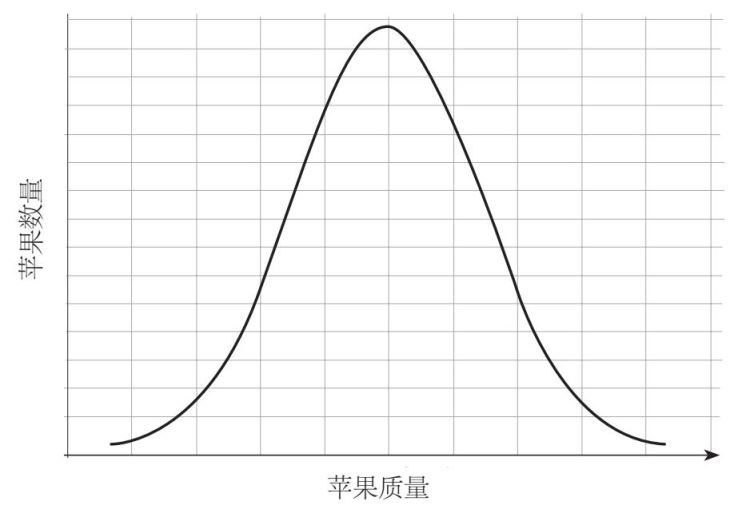

有时，我们把收集来的数据整理后，会发现这些数据可以绘成一条钟形曲线。例如，如果我将一颗苹果树上结的所有果实的重量测量一下，我可能会得到下面这条曲线：

正如我们所预期的，大多数苹果接近中心的值（平均数），离平均数越远，我们发现，相应的苹果数量越少。
这种曲线很常见，所以它被称为正态分布也在情理之中。但真正的原因是，统计学家在其中使用了规范化的模式，也就是说它的平均数为0，标准差为1，并以此为基础来统计数据。它可以用来计算实际人口数高于给定值的百分之几。因此，标准差可以用于计算常见的分布数据。
在正态分布中，68%的数据在平均数的一个标准差之内，95%的数据在两个标准差之内，99.7%的数据在三个标准差之内。大型强子对撞机的科学家在2013年宣布，他们发现了希格斯玻色子，并提及了“5西格玛”。西格玛是用来表示标准差的希腊字母，5西格玛的意思是，在不考虑新粒子的情况下，它们的数据偶然出现的概率是偏离平均值5个标准差，这个概率约为0.000 000 3。
正态分布在很多地方都可以帮助我们。比如，在人体测量学这门测量人体的科学中，设计者会利用人体测量的正态分布数据来决定产品的尺寸，这些产品包括衣服、家具、技术、火车、飞机和建筑物等。人们可以计算出有多少人适合中等尺寸的T恤衫，或入舱口设计成多大合适。
IQ（智商）是一个有争议的智力估量标准。智商是很难准确测量的，不可能用一个10分钟的在线测试就完成。人口的智商多呈正态分布，平均数为100（“平均智力”），标准差为15。门萨高智商俱乐部声称它的成员在智商测试中都达到前2%的水平，相当于135以上。
1926年，美国心理学家凯瑟琳·莫里斯·考克斯（Catharine Morris Cox，1890—1984）发布了一项非常有趣的研究，其中一些是评估历史上各种杰出“天才”的智商。
她的榜单中排名第一的是德国全才约翰·冯·歌德（1749—1832），他在哲学、政治、科学和文学等领域都做出了巨大的贡献，智商估计为188；莱布尼茨的智商是183，位居第二位；法国人皮埃尔–西蒙·拉普拉斯（1749—1827）和英国人艾萨克·牛顿的智商均为168，并列第三位。
当代澳大利亚数学家、曾荣膺菲尔兹奖的陶哲轩（Terence Tao，生于1975年）智商超过200。
如果你感到有些自卑，没关系，因为你要知道，随着时间的流逝，人类的智商似乎越来越高。